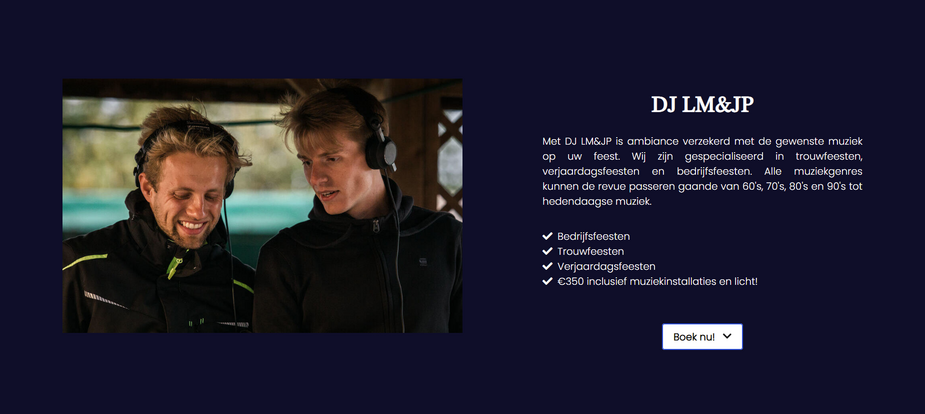
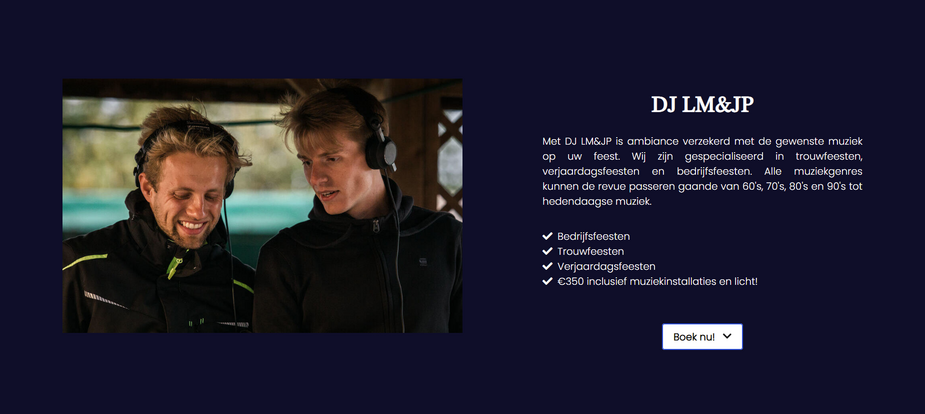

LM-Sounds
2020 - 2021
Semester 2
Explanation of the project
 

Me and Michiel Van Eynde made this website for LM-Sounds.
We got asked to make a modern version of their current site build in Wix. To have a startingpoint we made some mockups which they gave feedback on what things they wanted changed. When they were satisfied with the mockups we started coding the website from the ground up with TailwindCSS.
In the beginning it was a bit of a search to find the right TailwindCSS classes but when we really understood how it worked it was a very powerful system to work with.
there is not something that I have done specifically on my own, we've each made and adjusted something everywhere.